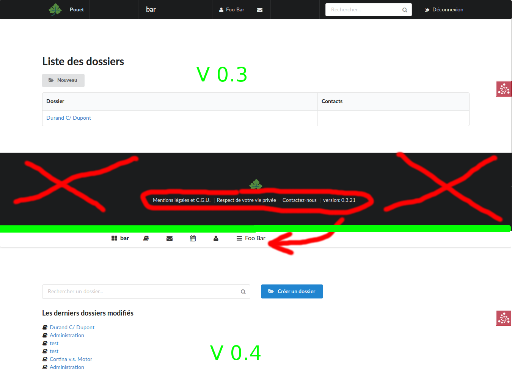

Le Lean pour le GreenIT
Comment nous avons utilisé le lean pendant la conception
pour réduire l'empreinte écologique de notre site web
Bruno Thomas - @bam_thomas - classe.io
"Si vous aggrégez la consommation électrique des centres de données et des équipements réseau auxquels nous nous connectons, ce serait le 6e pays au monde en consommation d'énergie"
Gary Cook Greenpeace's international IT analyst

Plan
- Le contexte du projet
- Situation
- Problème: l'impact écologique du site
- Kaizen: l'intégration du mail
- Resultats & Conclusions
Une rencontre
entre
-
Deux avocats et un développeur
Le cabinet Ricard & Ringuier ne trouvait pas un logiciel de gestion de dossier qui remplisse leurs besoins, me demandent si on peut en créer un...
-
Écoconception et Lean
...avec une démarche d'écoconception (Responsabilité Sociétale des Entreprises)

Que dit la littérature ?
Sur l'écoconception logicielle-
Scott Jehl
 Un livre pour les dévelppeurs. Une grand part du livre est consacrée à la conception réactive (responsive)), mais aussi :
Un livre pour les dévelppeurs. Une grand part du livre est consacrée à la conception réactive (responsive)), mais aussi :- comment faire en sorte qu'un site web soit durable et fonctionne avec tous les types de matériels ?
- comment optimiser l'utilisation des resources d'exploitation du site ?
-
Frédéric Bordage
Ce sont 115 bonnes pratiques proposées par l'auteur pour optimiser un site web. Chacune a une indication d'impact fort/faible/moyen qui permet de faire une grille d'évaluation de la qualité écologique du site en comptabilisant les pratiques implémentées.
La résolution de problème
Quel problème adresser en premier ?
Quel va être le bénéfice pour l'utilisateur ?
Comment mesurer l'amélioration de l'empreinte carbone ?

2. Situation
Ecoindex model


Allons sur le terrain
Comment le site est-il construit ?
<div class="ui inverted vertical footer segment">
<div class="ui center aligned container">
<img src="images/logo.png" class="ui centered mini image">
<div class="ui horizontal inverted small divided list">
<a class="item" href="#">Mentions légales et C.G.U.</a>
<a class="item" href="#">Respect de votre vie privée</a>
<a class="item" href="#">Contactez-nous</a>
<div class="item">version: {{ version }}</div>
</div>
</div>
</div>
Problème: impact écologique du site (pied de page)
Les avocats demandent de supprimer le pied de page. Cela représente 558 Bytes et 8 éléments DOM pour chaque page
{kind=link}
<!DOCTYPE html>
<html><head>
<meta http-equiv="content-type" content="text/html; charset=UTF-8">
....
<title>Projet S</title>
<link rel="stylesheet" href="/static/css/semantic.css"/>
<link rel="stylesheet" href="/static/css/mytheme.css"/>
<script src="/static/js/jquery.min.js"/>
<script src="/static/js/jquery.form-3.51.js"/>
<script src="/static/js/underscore.min.js"/>
<script src="/static/js/backbone.min.js"/>
<script src="/static/js/semantic.min.js"/>
<script>
$(document).ready(function() {
$('.masthead').visibility({
once: false,
onBottomPassed: function() {
$('.fixed.menu').transition('fade in');
},
onBottomPassedReverse: function() {
$('.fixed.menu').transition('fade out');
}
});
$('.ui.sidebar').sidebar('attach events', '.toc.item');
});
</script>
</head>
<body>
<div class="ui main container>
{% block body %}{% endblock %}
</div>
</body>
Problème: impact écologique du site (entête)
-
2 feuilles de styles CSS non minifiées
-
5 librairies javascript. Chacune représente une requête
-
Du javascript en ligne chargé à chaque page (pas caché, pas minifié)
Retour à la situation (polling)
Le polling...
"...c'est envoyer un ascenseur sans arrêt à chaque étage pour voir si quelqu'un veut monter ou descendre"
Kaizen: l'intégration du mail
les alternatives au Polling
Le protocol HTTP n'a pas été conçu pour que le serveur prenne l'initiative
-
Long time polling
Contournement du protocol HTTP pour faire de l'événementiel. Fonctionne avec tous les navigateurs. Surcoût des entêtes HTTP envoyés à chaque requête (~1KB).
-
Comet
Vieux protocol basé sur le long time polling
-
Streaming HTTP
Similaire au long time polling mais le serveur répond avec un entête "Transfer Encoding: chunked" ce qui permet de ne pas refaire une nouvelle requête à chaque fois que le serveur envoie une donnée
-
Server-Sent Events
Basé sur le long time polling
-
Plugins réseau
Les utilisateurs doivent installer un composant dans leur navigateur
-
Websocket
Communication bidirectionnelle avec une connexion TCP. Implémenté dans tous les navigateurs récents (mobile inclus). Juste une ligne de vie TCP : 132 octets envoyés sur le réseau toutes les 45s.
-
HTTP/2
Dernière spécification HTTP (2015) qui permet aux serveurs web de faire du push/pipelining. Très efficace mais pas encore très répandu.
Kaizen: l'intégration du mail
les alternatives au Polling
Le protocol HTTP n'a pas été conçu pour que le serveur prenne l'initiative
-
Long time polling
Contournement du protocol HTTP pour faire de l'événementiel. Fonctionne avec tous les navigateurs. Surcoût des entêtes HTTP envoyés à chaque requête (~1KB).
-
Comet
Vieux protocol basé sur le long time polling
-
Streaming Http
Similaire au long time polling mais le serveur répond avec un entête "Transfer Encoding: chunked" ce qui permet de ne pas refaire une nouvelle requête à chaque fois que le serveur envoie une donnée
-
Server-Sent Events
Basé sur le long time polling
-
Plugins réseau
Les utilisateurs doivent installer un composant dans leur navigateur
-
Websocket
Communication bidirectionnelle avec une connexion TCP. Implémenté dans tous les navigateurs récents (mobile inclus). Juste une ligne de vie TCP : 132 octets envoyés sur le réseau toutes les 45s.
-
HTTP/2
Dernière spécification HTTP (2015) qui permet aux serveurs web de faire du push/pipelining. Très efficace mais pas encore très répandu.
Kaizen: l'intégration du mail
les alternatives au Polling
Principales différences (à partir de ce fil SO et le site caniuse.com). Le premier est meilleur.
-
Latence & Bande passante
- WebSockets & HTTP/2
- HTTP streaming
- HTTP long-polling
- HTTP polling
-
Compatibilité navigateurs
- HTTP polling & streaming: tous
- WebSocket: iOS 4.2. Android 4.4. IE 10 and Edge. Firefox, Chrome et Opera depuis longtemps
- HTTP/2: iOS 9.2, Android 4.4.4, pas IE mobile, Safari partiel, Chrome > 41
-
Estimation du coût d'implémentation
- HTTP polling
- WebSockets
- HTTP long polling, streaming
- HTTP/2
-
Supporte les données binaires (blobs, typed arrays)
- WebSockets: oui
- HTTP/2: oui
- HTTP polling, streaming: ajax binaire est récent


Vérifions
Combien nous avons été bons !


Conclusion (1)
L'écoconception est congruente avec le Lean
- méthode d'apprentissage empirique
- maximise l'utilisation des resources
Conclusion (2)
Artisant logiciel => Écoconception
Écoconception ≠> Artisant logiciel
Conclusion (3)
L'écoconception logicielle = opportunité
- pour améliorer l'expérience utilisateur
- pour "vendre" de l'optimisation
{kind=link}
Merci !
- Régis Médina
- Antoine Ricard
- Bruno Ringuier
- Florence Préault
- Philippe Blayo
- Vous !
Références
- Ecoindex : http://ecoindex.fr
- Un autre outil de mesure environnemental : http://webenergyarchive.com/
- Un article du CNRS à propos de l'efficacité des langages compilés/interprétés
- Le storytelling produit : "Using story telling strengthen brand" et "Jimmy Webb and the Power of Storytelling for B2B Companies"